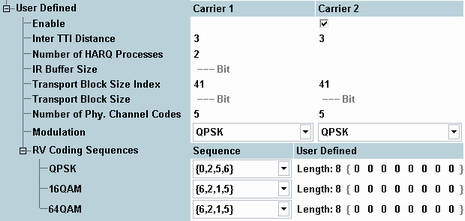

This section configures a user-defined HS-DSCH. The settings take effect when a connection with this configuration type is set up, see "Configuration Type".
User-defined channel configuration requires option R&S CMW-KS411.

Enables or disables the usage of an additional carrier for data transport via the HS-DSCH.
This parameter is only visible while a multi-carrier scenario is active.
Options R&S CMW-KS404 and R&S CMW-KS411 are required.
Remote command:Minimum distance between two consecutive transmission time intervals in which the HS-DSCH is allocated to the UE.
If a multi-carrier scenario is active, individual values can be set per carrier.
Option R&S CMW-KS411 is required.
Remote command:Number of hybrid automatic repeat request processes for retransmission of HSDPA packets.
Option R&S CMW-KS411 is required.
Remote command:Displays the size (no. of bits) of the virtual IR buffer used in the H-ARQ process. The IR buffer size is given by the total buffer size divided by the number of HARQ processes. The total buffer size for all H-ARQ processes is fixed for each UE category; see 3GPP TS 25.306, table 5.1a, "Total number of soft channel bits".
Option R&S CMW-KS411 is required.
Remote command:Value of the transport format and resource indicator (TFRI) signaled to the UE. The TFRI is also called ki in the specification. It is used for calculation of the transport block size.
If a multi-carrier scenario is active, individual values can be set per carrier.
Option R&S CMW-KS411 is required.
Remote command:Displays the used transport block size for information. The value depends on the transport block size index, the modulation type and the number of assigned channelization codes.
If a multi-carrier scenario is active, individual values can be set per carrier.
Option R&S CMW-KS411 is required.
Remote command:Number of HS-PDSCH channelization codes to be assigned to the UE.
If a multi-carrier scenario is active, individual values can be set per carrier.
Option R&S CMW-KS411 is required.
See also "Channel Code".
Remote command:Modulation scheme QPSK, 16-QAM or 64-QAM.
If a multi-carrier scenario is active, individual values can be set per carrier.
Option R&S CMW-KS411 is required for QPSK and 16-QAM.
Options R&S CMW-KS411 and R&S CMW-KS403 are required for 64-QAM.
Remote command:Redundancy and constellation version coding sequences, defining the retransmission of HSDPA packets.
The parameters are configured in the same way as for CQI channels, see "RV Coding Sequences".
Option R&S CMW-KS411 is required for QPSK and 16-QAM.
Options R&S CMW-KS411 and R&S CMW-KS403 are required for 64-QAM.
Remote command: